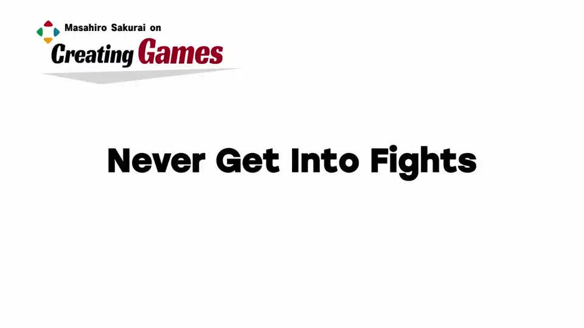
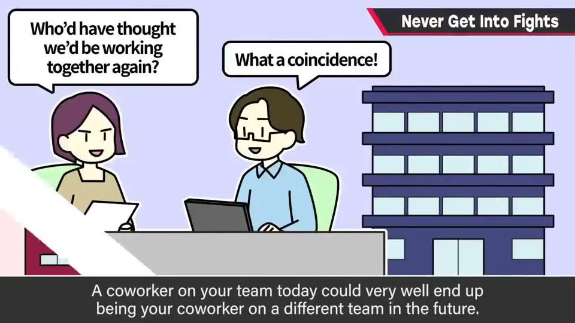
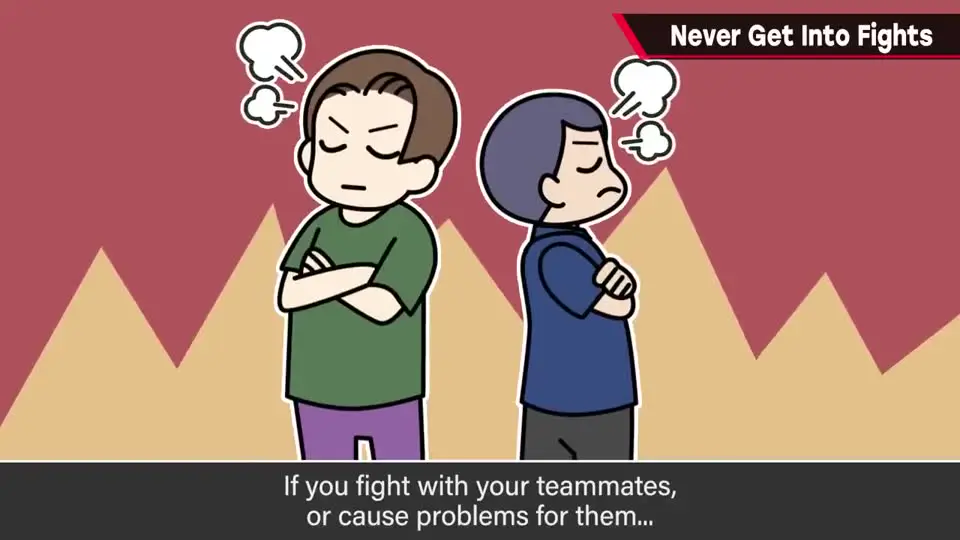
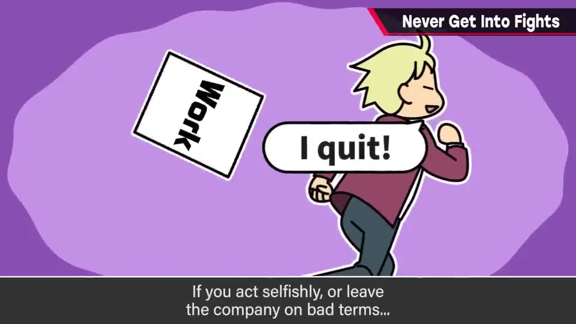
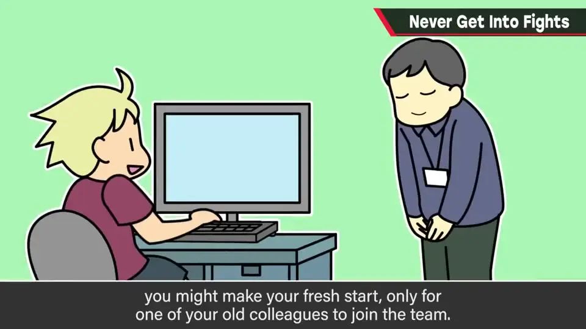
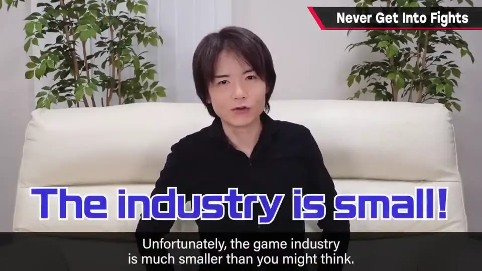
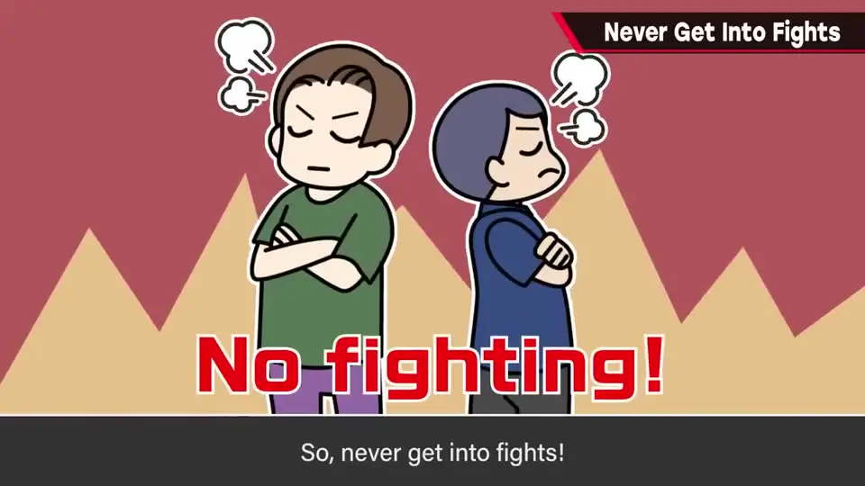
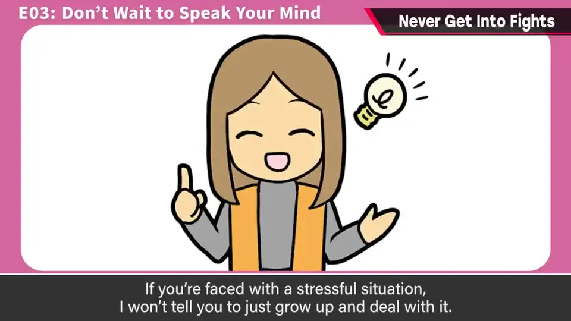
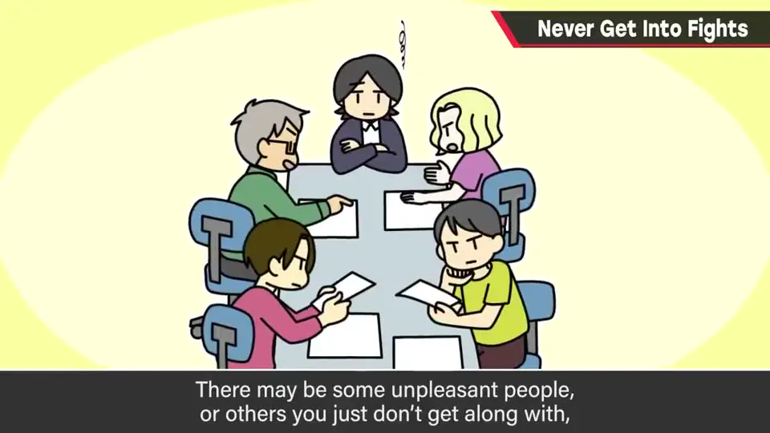

速览
做游戏会换很多团队：哪怕不是派遣，自己或别人换东家也很日常。要记住：现在一起做事的人，将来可能又在同一处共事。吵架、添乱、闹别扭、把后事搞得一团糟就走，或抛下项目另起炉灶——结果常是：新地方碰巧又碰到前队友，或几年后在无关项目里再会合。行业比想象的窄。所以别吵架，也别说人坏话；你那样对待别人，对方也会带着对你的恶评——你自己的立足之地会没了。除非彻底离开行业，这类行为多半会回到自己头上。直说建设性意见可以，离职去更合拍的地方也可以；但别怀着「这人很差」的心思——讨厌会回旋镖。团队应是为同一目标并肩的协作体。
1. 换队很日常，人却可能再碰头 0:04
做游戏的人常会在不同团队里工作：派遣自不必说，就算不是，自己或别人换所属、人员轮换也很日常。
要记住：现在一起做事的人，将来可能又在同一处共事。


若和队友吵架、添乱、闹别扭、把后事搞得一团糟就走，或干脆抛下项目去新地方「重新开始」——结果常常是：新地方碰巧又来了前队友，或几年后在完全无关的项目里再会合。
2. 行业比想象的窄 0:58




- 所以：别吵架；也别说人坏话。
- 你那样对待别人，对方就会带着对你的恶评——你自己的立足之地会没了。
- 除非彻底离开行业，这类行为多半会回到自己头上。

3. 旁白：别的导演也会来打听 1:26
偶尔有别的导演来问：「樱井那边做事的某某来面试，这人怎么样？」——有时会让人难回答。他从不说坏话，也会护着人；但这也说明：业内口碑会流动。
4. 可以直说，但别怀着讨厌 1:47
- 面对压力，他不会说「成熟点忍着」——很多时候直说心里话反而对大家都有好处。
- 但要记住：工作的空气，多半是自己造出来的。
- 讨厌的人、不合拍的人都会有；只盯着他们，可能看不见撑着你、没惹事的人。
- 从不合拍处离开：OK。提出建设性意见：OK。
- 但别怀着「这人很差」——讨厌会回到自己头上。
团队和工作伙伴，应是为同一目标并肩的协作体。


flowchart LR
A["换队很日常"] --> B["行业很窄：可能再碰头"]
B --> C{"怎么相处？"}
C -->|"吵架 / 说坏话 / 怀恨"| D["恶评回旋镖
立足之地变窄"] C -->|"直说建设性意见
空气自己造"| E["为同一目标协作"]
立足之地变窄"] C -->|"直说建设性意见
空气自己造"| E["为同一目标协作"]
自测题
1. 为什么樱井强调「别和团队成员吵架 / 别把后事搞砸就走」？
行业比想象的窄。新工作或几年后无关项目里，常会再碰到前队友；结怨会跟着你。 0:58
2. 别的导演问他对某位面试者的看法时，他怎么做？这对「别说坏话」说明了什么？
他从不说坏话，也会护着人；但回答有时仍会为难。说明业内口碑会流动，恶评容易回旋镖。 1:40
3. 面对压力或不合拍的人，哪些可以、哪些不行？
可以：直说建设性意见；从不合拍处离开。不行：怀着「这人很差」去讨厌人——讨厌会回到自己头上。工作空气要自己造；别只盯着讨厌的人，而看不见撑着你的人。 2:05